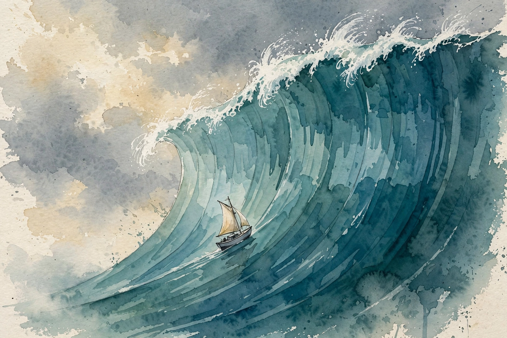

Huberman Lab · Episode Companion
Tools for Managing Stress and Anxiety
Andrew Huberman organizes stress into an operational framework: real-time tools for the moment, threshold tools for the weeks, and supplements for the margins. At the center sits a single breath pattern, discovered in the 1930s, that can return your heart rate to baseline in under half a minute.
Illustration. The physiological sigh: a double inhale, a long exhale, and a calmer nervous system. AI-generated watercolor made for this page.
Watch. The official Huberman Lab episode video. Use the chapter menu above to move through this companion as you listen.
~00:01
Intro: An Organizational Logic for Stress
This episode belongs to a month of four episodes on emotions. Huberman promises something more useful than a list of tips: an organizational logic, a framework for thinking about states we usually just label happy or sad, calm or stressed.
He starts by cleaning up myths. The famous one: stress impairs your immune system. His answer is careful. That's true in certain contexts.
In other contexts, stress enhances the immune system and makes it function better. Whether alertness or calm is good or bad depends on the circumstance. The episode refuses the simple story that stress is poison and calm is medicine.
Nugget 1 · Myth cleanup
Stress is not the enemy
What happened. Huberman rejects the blanket claim that stress harms immunity. Short-term stress can enhance immune function. Context decides.
Why it matters. A war on stress creates a second stressor: fear of the feeling. The framework replaces avoidance with management.
The principle. Ask what the stress is for before you fight it. Some of it is fuel.
~00:13
Real-Time Tools for Real-Time States
Emotions and stress happen in real time.
Andrew Huberman · Episode ~00:26
The sentence sets the design constraint for the whole episode. A tool that works tomorrow does not help a panic that peaks in ninety seconds. So Huberman divides his toolkit by timescale. Real-time tools act in the moment, while the stress is live. Threshold tools build capacity over weeks. Supplements sit at the margins.
This chapter covers the first class. Everything here must work while your heart pounds and your attention narrows, with no equipment and no preparation.
Nugget 2 · Timescale
Real-time tools for real-time states
What happened. Huberman sorts tools by timescale: real-time tools for the live moment, threshold tools for weeks, supplements for the margins.
Why it matters. Most advice fails because it answers the wrong timescale. Journaling does not stop a panic attack. Breathing does not fix a burnout quarter.
The principle. Match the tool to the clock. Name the timescale before you pick the tool.
~00:24
The Physiological Sigh
The star real-time tool is the physiological sigh. It was discovered in the 1930s and has since been mapped at the neurobiological level by Jack Feldman's lab at UCLA and Mark Krasnow's lab at Stanford. Humans and animals do it spontaneously: before sleep, during sleep when carbon dioxide builds up, after hard sobbing, in claustrophobic spaces. It is the body's built-in reset breath.
The pattern is simple. Take a double inhale through the nose, two sharp sniffs, then one long exhale through the mouth. The double inhale pops open the collapsed air sacs in the lungs. The long exhale offloads a large volume of carbon dioxide. One to three rounds is enough.
The sigh in two moves
Schematic of the mechanism as described in the episode.
Source: Huberman Lab, Tools for Managing Stress and Anxiety, ~00:24. Mechanism per Feldman (UCLA) and Krasnow (Stanford) labs as described.
The speed is the point. With exhale-emphasized breathing, heart rate takes about 20 to 30 seconds to return to baseline. That is the whole intervention: under half a minute, no app, no equipment.
Huberman gives the diaphragm its due. It is a skeletal muscle and an internal organ you can control voluntarily, unlike the spleen, the heart, or the pancreas. You cannot will your pancreas to release insulin. You can move your diaphragm any time you want, and it runs in the background when you do not think about it. That makes breathing the only direct remote control into the autonomic nervous system.
Nugget 3 · The breath
One breath, thirty seconds
What happened. The physiological sigh, double inhale through the nose and long exhale through the mouth, restores baseline heart rate in 20 to 30 seconds.
Why it matters. The tool fits the timescale of the problem. Panic peaks in seconds. The sigh answers in seconds.
The principle. Learn one real-time tool cold. In the spike, you will not remember three.
Nugget 4 · Anatomy
The diaphragm is the remote control
What happened. The diaphragm is the one internal organ under voluntary control. Breathing is the only direct lever into the autonomic nervous system.
Why it matters. Every other calm-down advice works indirectly. The breath works at the hardware level.
The principle. When the system spikes, go to the one control you own. Breathe on purpose.
~00:40
Deliberate Activation: The Endotoxin Study
The sigh presses the brake. The next tool presses the accelerator on purpose. Cyclic hyperventilation, the Tummo or Wim Hof pattern, runs 25 to 30 deep breaths, then an exhale with the breath held for 15 to 30 seconds, repeated for three or four rounds, ending with a big inhale held until the impulse to breathe returns. The point is deliberate adrenaline release.
The evidence he cites is remarkable. In a study published in the Proceedings of the National Academy of Sciences, volunteers were injected with E. coli endotoxin, a bacterial wall fragment that mimics infection and causes fever, nausea, and sickness. Half the group practiced the breathing protocol. That group experienced essentially zero symptoms: no fever, no sickness, no vomiting. The liberated adrenaline blunted the inflammatory response.
Huberman uses the protocol himself at the first tickle of a cold, with his doctor's clearance. He rarely takes ice baths and prefers hot showers, so the breathing is his version. His safety warnings are absolute: never do the breath holds near water. People died from shallow-water blackout. get a doctor's clearance first, and skip it with glaucoma or eye-pressure concerns.
The deeper lesson is the pairing. The stress system knows how to activate itself. If you learn to activate it deliberately, you must also learn to press the brake deliberately. Accelerator and brake, the hyperventilation and the sigh, belong together as one skill.
Nugget 8 · Pairing
Learn the brake with the accelerator
What happened. Deliberate hyperventilation releases adrenaline and, in the PNAS endotoxin study, erased the symptoms of an injected bacterial toxin. Huberman pairs it with the sigh: never learn activation without deactivation.
Why it matters. A stress tool without an off switch is just stress. The pair is the tool.
The principle. Every accelerator needs a brake. Practice both, or practice neither.
~00:56
The Stress Threshold

Illustration. Threshold as capacity: the same wave, a steadier boat. AI-generated watercolor made for this page.
Medium-term stress, the kind that lasts days to weeks, is governed by a different variable: the stress threshold. Huberman defines it plainly as the ability to cognitively re-regulate what happens inside the body. It's about capacity.
Raising the threshold is the work of stress inoculation. The method looks like the tools already described: place yourself deliberately into stress, in doses you control, and practice returning to baseline. Cold showers, ice baths, hard exercise, the breathing protocols. The dose is the message. Deliberate entry builds capacity. Ambush depletes it.
Stress threshold: capacity before and after deliberate training
Schematic of his capacity model. Not measured data.
Source: Huberman Lab, Tools for Managing Stress and Anxiety, ~00:56. Schematic of the stress-threshold capacity model.
He adds a humbling number about the hardware. The adrenals hold enough adrenaline to support 200 years of stress, for better or worse. Running out of adrenaline is not the risk. Running out of control is.
Nugget 5 · Capacity
Threshold is capacity
What happened. The stress threshold is the ability to re-regulate the body under load. Deliberate, dosed stress raises it. The adrenals hold 200 years of adrenaline, so supply is never the limit.
Why it matters. People try to shrink their lives to fit a low threshold. The episode argues the opposite: raise the threshold to fit the life.
The principle. Do not shrink the wave. Steady the boat.
Nugget 6 · Inoculation
Inoculate deliberately
What happened. Stress inoculation means entering stress on purpose, in controlled doses, and practicing the return to baseline. Cold, heat, exertion, and breath all count.
Why it matters. The nervous system learns from deliberate exposure the way the immune system learns from a vaccine: a small, chosen dose teaches the response.
The principle. Schedule small hard things. The unchosen hard things get easier.
~01:18
Supplements: Ashwagandha and Theanine
Supplements come last in the framework, and Huberman treats them as marginal gains, not foundations. He focuses on three, with a warning on one of them.
Ashwagandha leads. Across six studies, it reduced cortisol by 14.5 to 27.9 percent in otherwise healthy but stressed people. He calls the effect significant and the literature consistent.
Ashwagandha: cortisol reduction across six studies
Percent reduction in cortisol, otherwise healthy but stressed adults. Hover for detail.
Source: Huberman Lab, Tools for Managing Stress and Anxiety, ~01:18. Cortisol reduction of 14.5 to 27.9 percent across six studies.
L-theanine follows. At 100 or 200 milligrams, taken 30 to 60 minutes before sleep, it deepens the transition into sleep for many people. It raises GABA, the brain's main inhibitory neurotransmitter, and quiets the forebrain's thinking and ruminating systems. In chronically anxious or stressed people, the studies show significantly increased relaxation.
Melatonin gets the warning. It is a hormone secreted by the pineal gland in proportion to darkness, and it helps with falling asleep, not staying asleep. Huberman does not recommend supplementing it: typical doses of 1 to 3 milligrams are outrageously high compared to what the body makes, super-physiological, with effects he considers poorly controlled.
Nugget 7 · Margins
Supplements are third-line
What happened. Ashwagandha cut cortisol 14.5 to 27.9 percent across six studies. Theanine at 100 to 200 milligrams aids sleep onset and relaxation. Melatonin, at typical 1 to 3 milligram doses, he advises against.
Why it matters. Supplements adjust the margins. Breath and threshold do the main work. Reversing the order is the common mistake.
The principle. Earn the basics first. Supplement only what the basics leave unfinished.
The episode in seven lines
- Stress is not poison. Short-term stress can enhance immunity. Context decides.
- Sort every tool by timescale: real-time, threshold, or margin.
- The physiological sigh resets the system in 20 to 30 seconds. Learn it cold.
- The diaphragm is the only voluntary lever into the autonomic nervous system.
- Deliberate adrenaline has uses, shown in the endotoxin study, but learn the brake with the accelerator.
- Raise the threshold with dosed, deliberate stress. The adrenals hold 200 years of supply.
- Supplements are third-line. Ashwagandha and theanine have data. Melatonin gets a warning.
Distilled from Huberman Lab, Tools for Managing Stress and Anxiety (Mar 2021, ~1h38m). Full episode: youtube.com/watch?v=ntfcfJ28eiU. Labs and studies named: Feldman (UCLA) and Krasnow (Stanford) on the sigh, the PNAS endotoxin study, and the six-study ashwagandha literature.